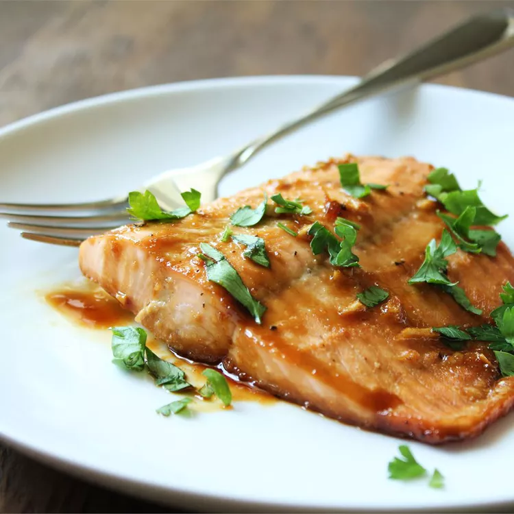

Maple Salmon
This restaurant-worthy maple salmon recipe is as good as it gets! Plus, it's easy to make with simple ingredients you probably already have on hand.

Ingredients
- ¼ cup maple syrup
- 2 tablespoons soy sauce
- 1 clove garlic, minced
- ¼ teaspoon garlic salt
- ⅛ teaspoon ground black pepper
- 1 pound salmon